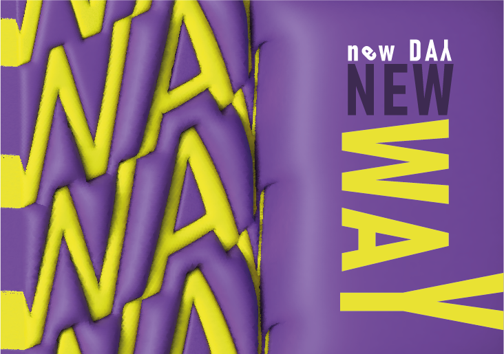
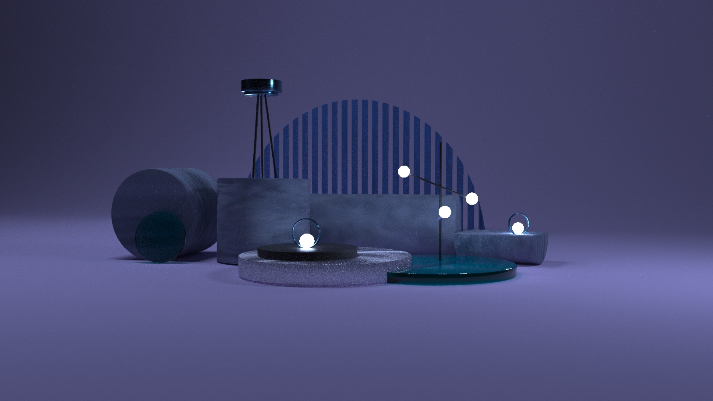

Привітики, я дизайнер Надія

instagram: @y_u_m._i_
Отже, мої перші кроки в дизані почалися з того як я поступила в художній коледж імені Івана Труша. Перший курс був дуже складним оскільки я не так сильно була ознайомлена з правилами мистецтва. Та другий курс видався надзвичайно вдалим. Мої вміння стали покращуватися. На третьому курсі в нас нарешті зявився дизайн. Першою нашою роботою була стилізація предметів, другою була створення особистого персонаажа та копія ілюстрації. Третя робота була поєднана з другою, ми робили упаковку до чаю з нашим персонажем. Дальше на другому семестрі ми робили етикетку на енергетик, та дитячу абетку-гру.
Але на 4 курсі мені сподобалось найбільше, оскільки ми робили цілий проект поштової марки. На 30 річчя укр пошти ми готували марки конверти. спочатку все здавалося дууже важким, та ми впорались. Також я почала займатись фрілансом, що допомогло мені в подальшій роботі. А також я займалась 3 д дизайном. Ця частина певно сподобалась мені найбільше. На курсах ми робили багато всіляких меблів, що було дуже весело.

плакат банер

плакат 2

постановка в 3д